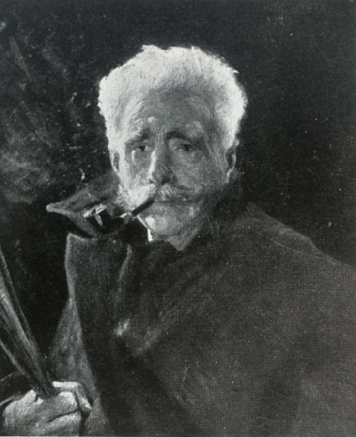

De Stefani Vincenzo’s Contribution to Italian Art Heritage
De Stefani Vincenzo- painter, decorator
Verona 6 March 1859 - Venice 1937
Vincenzo De Stefani, born on March 6, 1859, in Verona, Italy, was a prominent painter known for his eclectic style and significant contributions to Italian art. He studied under Napoleone Nani at the Accademia Cignaroli in Verona and Cesare Maccari in Rome. After completing his studies, he lived in Capri before settling in Verona and later moving to Venice, where he taught ornamental painting at the Accademia. De Stefani began his exhibition career in 1883, showcasing his works in Rome and Milan. His notable successes included exhibitions in Torino, Florence, and Verona, with significant acclaim at the 1887 National Exhibition in Venice. His versatile style ranged from portraits and landscapes to dramatic and genre paintings, reflecting the influences of his time, including that of F. Carcano and Lombard painting. As an advocate of naturalism, De Stefani played a key role in the art renewal movement in the Veneto region.
Our Team